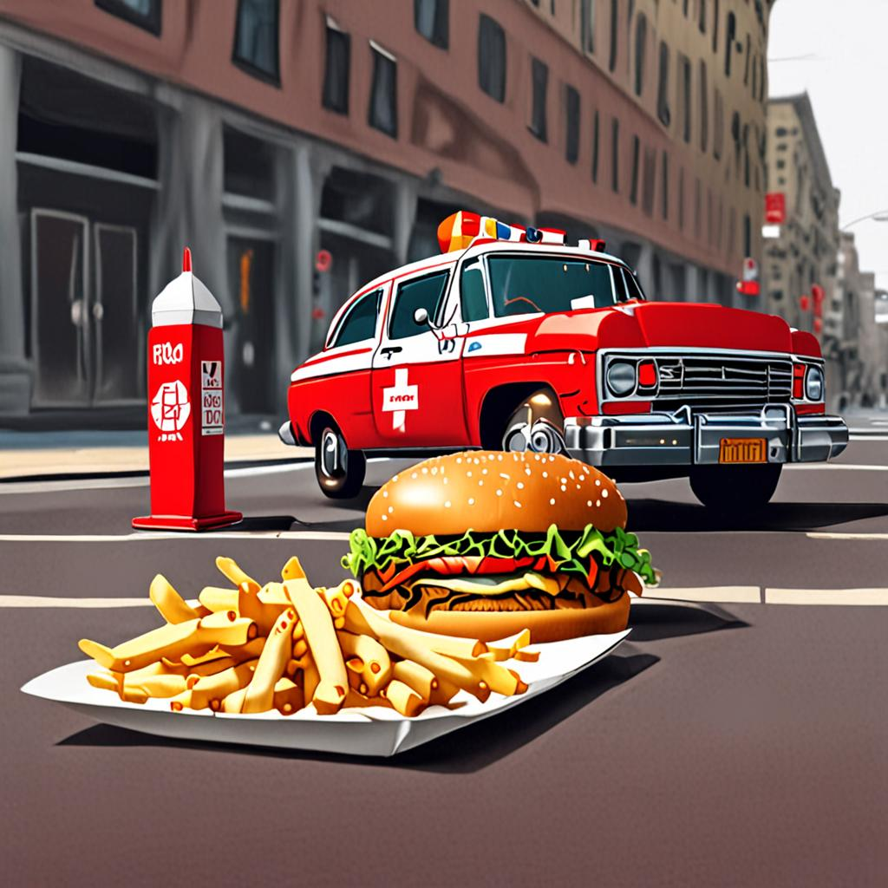
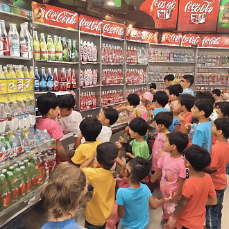

быстрое питание
fast «быстрый» и food «пища») — питание с уменьшенным временем приготовления и употребления пищи, с упрощёнными или упразднёнными столовыми приборами или вне стола. Для общественного быстрого питания предназначены рестораны быстрого питания, иногда так же, как и само питание, называемые фастфудами./p> фастфуд 
газировки
Газированная вода – это вода, насыщенная углекислым газом, в народе ее называют просто газировкой. Многие из нас предпочитают именно газировку для утоления жажды, поскольку она обладает приятным вкусом, а также условным прохладительным эффектом. Причем многие предпочитают не минеральную, а сладкую. Не смотря на тот факт, что многочисленные исследования постоянно подтверждают вред, который приносит потребление сладких газированных напитков, взрослые нередко пьют ее сами и еще чаще покупают своим детям.
напитки 